IROS 2026
IROS 2026 at am Glance export
Papers Distribution (count, % of 1,929 papers)
- Based on themes
Theme Papers Share Learning & AI (RL, imitation/demonstration, deep learning) 800 41.5% Navigation, Planning & Control 511 26.5% Locomotion & Platforms (legged, aerial, marine, field, soft) 385 20.0% Manipulation & Grasping 299 15.5% Perception & Vision 277 14.4% SLAM, Localization & Mapping 229 11.9% Multi-Robot & Human-Robot Interaction 227 11.8% Sensing & Tactile 154 8.0% Safety 128 6.6% Mechanism & Design 94 4.9% Medical & Assistive 88 4.6% - Based on keywords (count, % of 1,929 papers)
Keyword Count % Reinforcement Learning 198 10.3% Motion and Path Planning 152 7.9% Deep Learning for Visual Perception 144 7.5% Imitation Learning 121 6.3% Deep Learning in Grasping and Manipulation 117 6.1% Vision-Based Navigation 117 6.1% Machine Learning for Robot Control 101 5.2% Multi-Robot Systems 95 4.9% Deep Learning Methods 91 4.7% AI-Enabled Robotics 88 4.6% Mapping 88 4.6% Sensor Fusion 81 4.2% Legged Robots 80 4.1% Learning from Demonstration 80 4.1% SLAM 76 3.9% AI-Based Methods 76 3.9% Optimization and Optimal Control 75 3.9% Localization 75 3.9% Autonomous Vehicle Navigation 74 3.8% Force and Tactile Sensing 74 3.8% - Based on applications
About 57% of papers are general methods that state no specific application.
Application domain Papers Share Self-driving / Autonomous vehicles 182 9.4% Humanoid / Legged locomotion 152 7.9% Aerial / Drones / UAV 122 6.3% Human-Robot Interaction / Collaboration 122 6.3% Medical / Surgical / Healthcare 92 4.8% Marine / Underwater 54 2.8% Assistive / Rehab / Wearable / Prosthetics 39 2.0% Manufacturing / Industrial 35 1.8% Home / Service / Domestic 32 1.7% Search & Rescue / Disaster / Field 28 1.5% Agriculture / Forestry 28 1.5% Warehouse / Logistics 16 0.8% Construction / Inspection 12 0.6% Space / Planetary 11 0.6% - Based on institutions (all papers)
Institution Papers Share Tsinghua University 91 4.7% Carnegie Mellon University 77 4.0% Zhejiang University 60 3.1% HKUST 54 2.8% National University of Singapore 50 2.6% Shanghai Jiao Tong University 50 2.6% Chinese University of Hong Kong 45 2.3% Purdue University 45 2.3% MIT 43 2.2% University of Tokyo 43 2.2% Georgia Tech 36 1.9% KAIST 36 1.9% Northeastern University 36 1.9% Technical University of Munich 36 1.9% Harbin Institute of Technology 33 1.7% Nanyang Technological University 32 1.7% Beijing Institute of Technology 32 1.7% University of Michigan 31 1.6% SUSTech 31 1.6% University of Southern California 28 1.5% Beihang University 27 1.4% Peking University 27 1.4% ETH Zurich 26 1.3% Seoul National University 25 1.3% Tongji University 24 1.2% Institute of Automation, CAS 24 1.2% - Based on country / region
Country Papers Share China 571 29.6% USA 528 27.4% Japan 119 6.2% Germany 105 5.4% Korea 87 4.5% Singapore 80 4.1% UK 71 3.7% Italy 42 2.2% Switzerland 41 2.1% Canada 31 1.6% France 27 1.4% Netherlands 14 0.7% Other / Unresolved 456 23.6%
Self-driving Papers Distribution (count, % of 182 papers)
Note: the method table below is over the 62 self-driving ML-planner papers (a subset of the 182), not all 182.
- Based on sub-area
Sub-area Papers Share Navigation (high-level: AV navigation, ITS) 104 57.1% Perception (detection, segmentation, scene understanding) 67 36.8% Learning methods (RL / DL / representation / imitation) 55 30.2% Localization, Mapping & SLAM 41 22.5% Planning & Decision-making 36 19.8% Prediction & Forecasting 29 15.9% Safety 19 10.4% Simulation & Benchmarking 14 7.7% Multi-agent / V2X 7 3.8% - Based on method
ML method family Papers Share of 62 Reinforcement Learning (RL) 16 25.8% VLM / LLM / foundation model 15 24.2% Diffusion / score-based 14 22.6% Transformer / attention 14 22.6% Imitation / Behavior Cloning 6 9.7% MPC + learning / hybrid control 6 9.7% World model / model-based 5 8.1% Autoregressive / sequence / tokens 4 6.5% Vector quantization / codebook 2 3.2% Flow matching / rectified flow 2 3.2% Graph neural network 1 1.6% GAN / VAE / generative (other) 1 1.6% Inverse RL / IOC / cost learning 1 1.6% (no specific method matched) 11 17.7%
Exhibitor distribution (IROS 2026 exhibit hall)
| Field | Companies | Share |
|---|---|---|
| Humanoid / general-purpose embodied robots | 24 | 13.6% |
| AI / data / simulation / software (physical AI) | 24 | 13.6% |
| Manipulators / industrial / cobots | 18 | 10.2% |
| Education / associations / publishers | 15 | 8.5% |
| Dexterous hands / grippers / end-effectors | 14 | 7.9% |
| Tactile / force / haptic sensing | 14 | 7.9% |
| Actuators / motors / drives / components | 12 | 6.8% |
| Big tech / industry / government labs | 11 | 6.2% |
| LiDAR / depth / vision sensors | 9 | 5.1% |
| Motion capture / tracking | 8 | 4.5% |
| Quadruped / legged / aerial / field | 8 | 4.5% |
| Medical / assistive / BCI / prosthetics | 6 | 3.4% |
| Other / uncategorized | 6 | 3.4% |
| Autonomous vehicles / driving | 4 | 2.3% |
| Semiconductors / edge / power / hardware | 4 | 2.3% |
Research North Star
1. End-to-end
- [4895] NPPC: Neural Parametric Planning Cost for End-To-End Autonomous Driving P0 export R0
- Summary
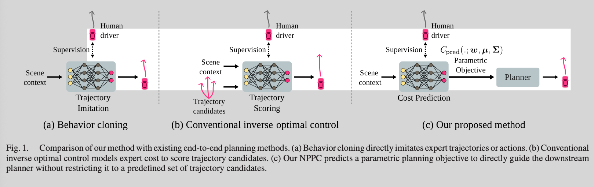
Problems:
- E2E planners trained by behavior cloning (imitating expert trajectories) suffer from biases and compounding errors in closed loop.
- Inverse Optimal Control (IOC) can help by learning the expert's planning cost,
but
- prior IOC uses hand-crafted cost terms, may not fully capture nuanced human decisions.
- spatially discrete cost-maps (need rule-based post-processing), they may not accurately capture high-risk regions in the continuous driving space.
- High-dim neural scorers (limited to ranking predefined trajectory candidates), limited to scoring a set of predefined trajectory proposals during inference, restricting flexibility in the final trajectory.
How:
- predicts a spatio-temporal cost-map as a weighted sum of radial basis functions (RBFs) conditioned on the scene
Why interesting:
- parametric learnable cost
- combine rule-based cost and learned cost
- Method
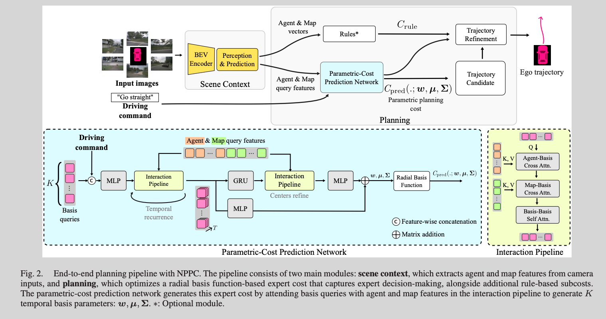
- NPPC predicts a spatio-temporal cost-map as a weighted sum of radial basis functions (RBFs) conditioned on the scene (low-dimensional, spatially continuous, learnable cost).
- Because it's low-dim, it plugs directly into downstream planners as an optimization objective with no post-processing, enabling maneuvers beyond predefined candidates.
- IOC
- cost function: \(g(\cdot) = \sum_{k=1}^{K}w_{k}\phi(\cdot)\)
- RBF: \(\phi(x, \mu, \Sigma) = \frac{1}{1 + (x - \mu)^\top \Sigma^{-1}(x-\mu)}\), where \(\mu\) is xy-coordinate.
- loss: max-margin loss which is the same as Maximum Margin Planning.
- Sampler: engineered sampler, which could be limit factor.
- Refer to End-to-end Interpretable Neural Motion Planner https://arxiv.org/pdf/2101.06679
- Planner: sampling, ranking, and optimization for refinement. The refinement step is a major difference from previous work as shown in Fig. 1.
- Overall
max-margin IOC with an learnable/interpretable cost using RBF and optimization for final refinement.
- Summary
2. Multimodal trajectory generation
- [706] G2DP: Diffusion Planning with Spatio-Temporal Grid Guidance P0 export
- Summary
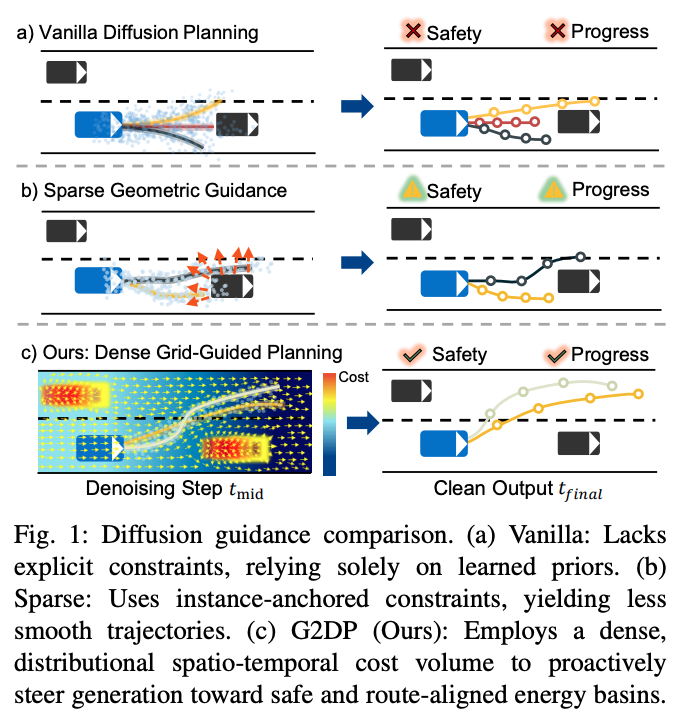
- Problem:
- Diffusion planners model diverse behaviors well but needs explicit guidance for safety/route adherence.
- Existing guidance using sparse entity-centric geometric queries or post refinement is not good at situational awareness and being fragile in interactive scenes.
- How
- builds a differentiable spatio-temporal cost volume and injects dense gradients into the denoising loop
- Why interesting:
- representation/guidance idea rather than a new generator
- Problem:
- Method
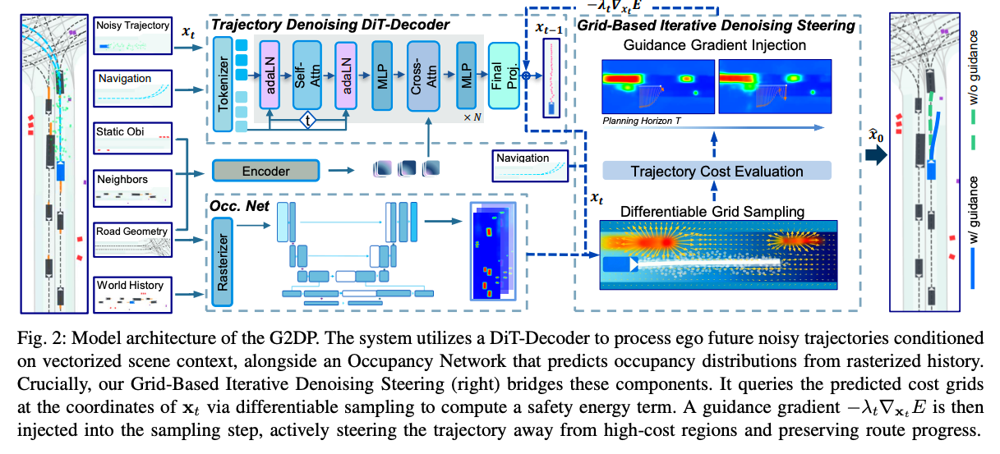
G2DP (Grid-Guided Diffusion Planning) enforces dense environmental constraints via inference-time guidance. It builds a differentiable spatio-temporal cost volume by fusing probabilistic future occupancy with a route-progress map, formulates it as a continuous safety energy functional, and injects dense gradients into the denoising loop to steer trajectories toward collision-free, progress-optimal regions.
- U-net to predict Occ map
- Fuse with route-aligned progress (encourage the ego to move forward and stay in the lane): \(\psi_{t}(u, v) = \gamma O_{t}(u, v) + (1-\gamma) R(u, v)\)
- To balance safety coverage with robustness, we propose a Top-K footprint aggregation strategy.
- Gradient-Based Denoising Steering.
- Result:
SOTA on nuPlan (+7.2 reactive score over the strongest IL baseline); top zero-shot transfer to interPlan and DeepScenario (collision avoidance +10.15 over unguided on interPlan). Code available (HangYuu/G2DP). TUM / Mercedes-Benz / KIT. IROS 2026.
- Overall: well-rounded closed-loop result with strong zero-shot transfer (evidence of generalization); contribution is a representation/guidance idea rather than a new generator, so impact hinges on how much the dense grid beats cheaper guidance.
- Summary
- [398] Vector Quantization for Trajectory Prediction P0 export
- Summary
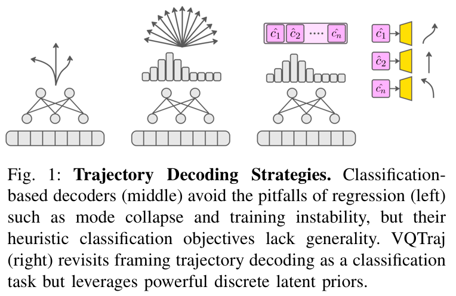
- Problem: motion-forecasting decoders stayed simplistic.
- Regression decoders (Winner-Takes-All) suffer training instability and mode collapse;
- heuristic classification over hand-crafted clusters/goals gives good mode coverage but poor absolute accuracy;
- autoregressive decoders are slow (token-by-token). Planners mostly act on the single most-likely mode, so that mode's quality matters most.
- How A novel trajectory decoding framework that transforms motion forecasting into a classification problem by learning discrete latent trajectory priors via Vector Quantization (VQ).
- Why interesting
- interpretable decision encoder (Codebooks).
- Problem: motion-forecasting decoders stayed simplistic.
- Method
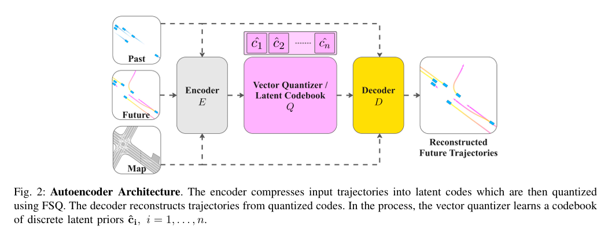
How to train vector quantizer and trajectory decoder
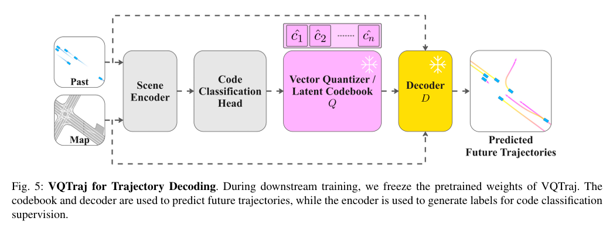
How to train scene encoder
VQTraj frames trajectory decoding as classification over discrete latent trajectory priors learned via Vector Quantization. An autoencoder with finite-scalar quantization (FSQ) learns a codebook where one code encodes a full trajectory (interpretable, data-driven priors instead of heuristics). Pretrain the autoencoder to reconstruct futures, then reuse it as a drop-in decoder: adapted models just predict a distribution over latent priors.
- Autoencoder to c, then finite-scalar quantization (FSQ) to get discrete codebook,
- Result
Upgrades two SOTA models on Argoverse 2, improving both the top-1 prediction (minADE1, minFDE1) and ranked multimodal predictions (bminFDE6); strong zero-shot cross-dataset transfer to Waymo Open Motion. Waabi / Univ. Toronto. IROS 2026.
- Summary
5. A safety layer
- [82] Learning a Unified Risk Map for Autonomous Driving R0 export
- Problem
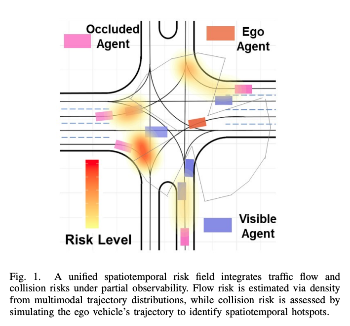
- Occlusion-aware prediction is hard under unobserved-region uncertainty.
- Prior methods either
- overestimate risk (reachable-set, overly conservative) or
- predict poorly under high occlusion (trajectory/occupancy prediction).
- Occluded-interaction scenarios are also scarce in data.
- Key insight:
- model a dense, planner-friendly unified spatio-temporal risk field that implicitly marginalizes over the uncertainty
- solve the data-scarcity problem with adversarial diffusion-based scenario generation.
- Why interesting
- prediction-planning interface (model risk vs trajectory)
- interactive data generation
- predict risk
- Method: four interconnected components (Fig. 2).
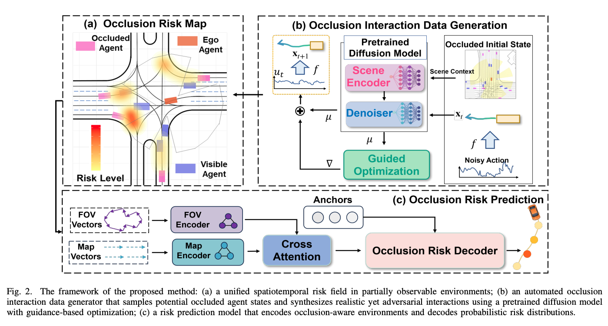
- Occlusion risk modeling (the risk field, 0.5 m grid \(\Omega\)):
- Flow risk: spatial density of predicted multimodal trajectories (where traffic is likely), distance-decayed by \(e^{-\lambda D}\); stationary agents filtered by a speed threshold \(v_{min}\).
- Collision risk: built from spatio-temporal overlap events where the ego trajectory comes within \(\delta\) of a predicted trajectory.
- Fused linearly \(R_{total} = \alpha R_{flow} + \beta R_{collision}\), then Gaussian-filtered and normalized.
- Occlusion interaction data generation (diffusion):
- samples hidden-agent initial states (position/speed) in occluded lane segments from map topology + ego FOV;
- a pretrained DDPM (transformer scene encoder + denoiser) predicts controls (accel \(\dot{v}\), yaw rate \(\dot{\psi}\)) rolled out via a bicycle model.
- A guidance function \(F(u^p) = \lambda_1 \min_t d_{inter} + \lambda_2 \min_t d_{road}\) steers generation toward adversarial-but-realistic (maximize interaction risk vs. SDF road adherence).
- Risk prediction network (lightweight, real-time ~6.67 ms / 150 FPS):
- ray-traced FOV encoding \(f_{fov}\) + vectorized map \(f_{map}\) fused by cross-attention;
- lane anchors as queries (QCNet-style) in a transformer decoder output per-anchor, multi-step risk scores (trained with MSE on modeled risk).
- Driving strategy: QP planner with composite cost \(C_{total} = w_1 C_{smooth} + w_2 C_{reach} + w_3 C_{risk} + w_4 C_{collision}\), where \(C_{risk} = \sum_i R_i v_i^2\) discourages speed in risky regions (slow down before a blind spot).
- Occlusion risk modeling (the risk field, 0.5 m grid \(\Omega\)):
- Problem
Workshops
Sim2Real export
URL: https://sim2realgap.github.io/sim2real-and-control-workshop-iros2026/
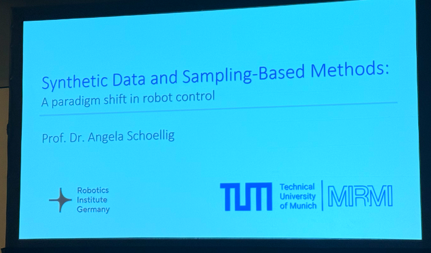
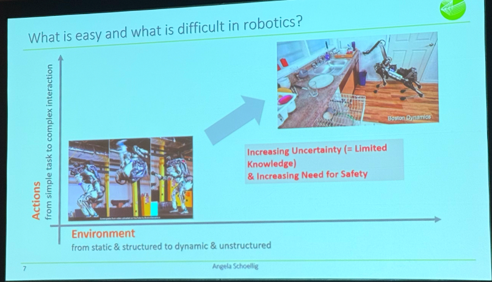
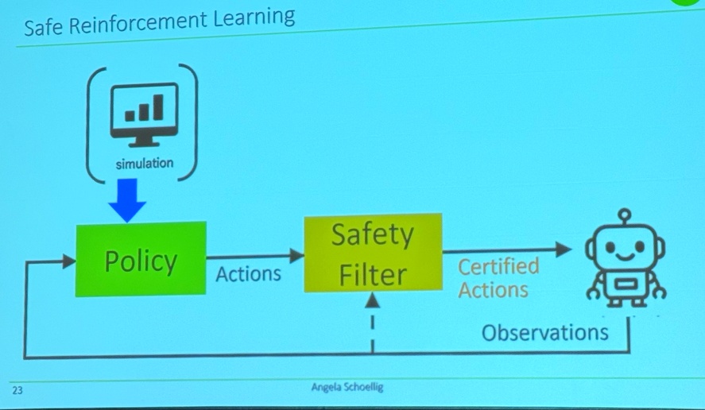
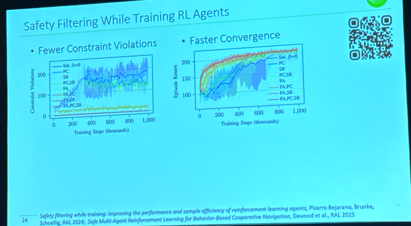
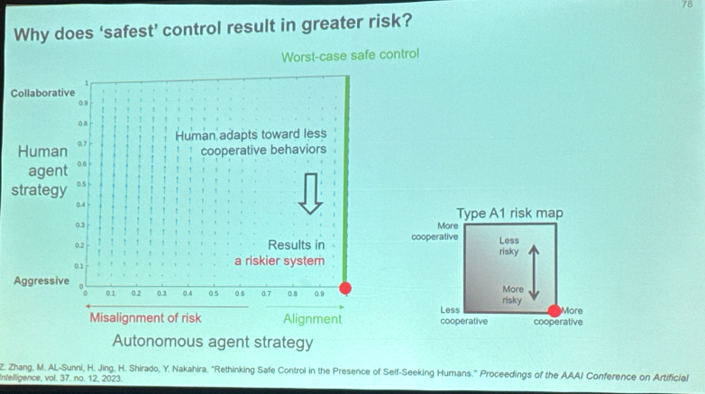
Learning-to-Optimize for Control in Robotics export
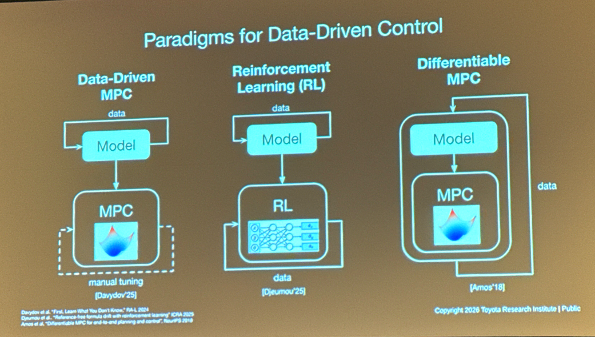
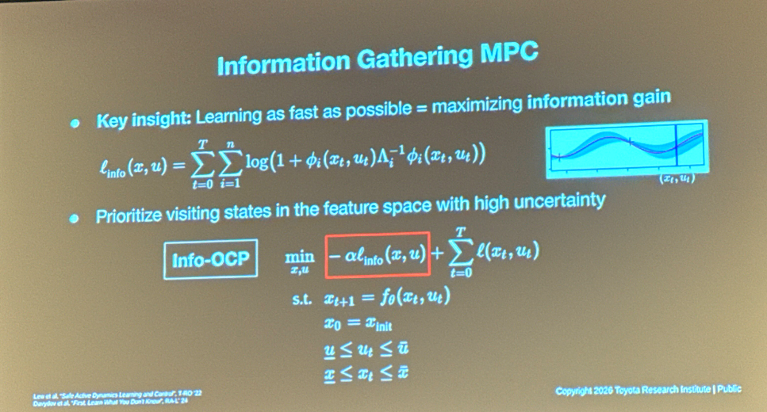
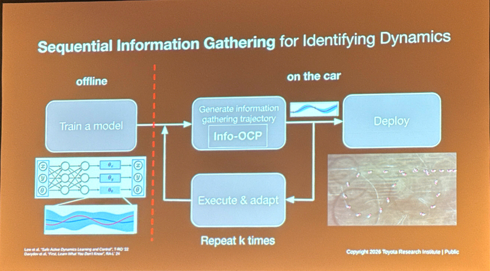
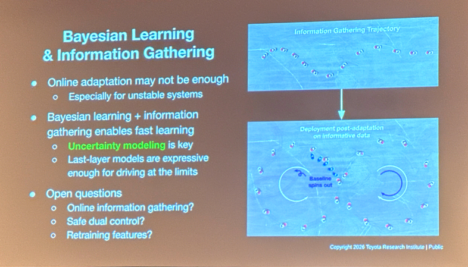
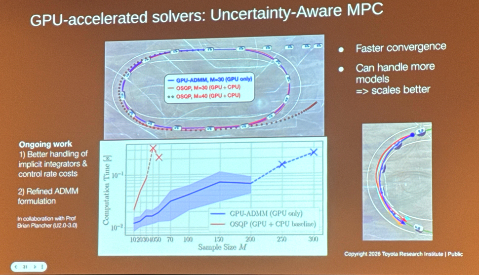
URL: https://ctrl-l2o-iros2026.github.io/Ctrl-L2O-IROS2026/#contents Slides: https://drive.google.com/file/d/11-1-Jqa470X6eqztOKcmqy4xuMvk9r5x/view